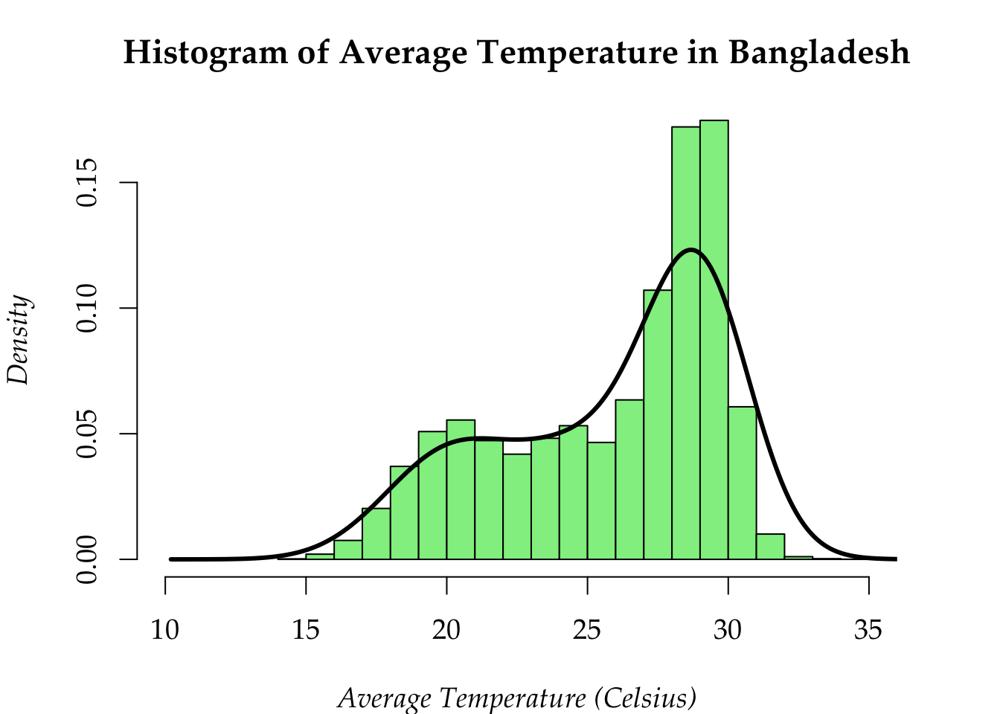
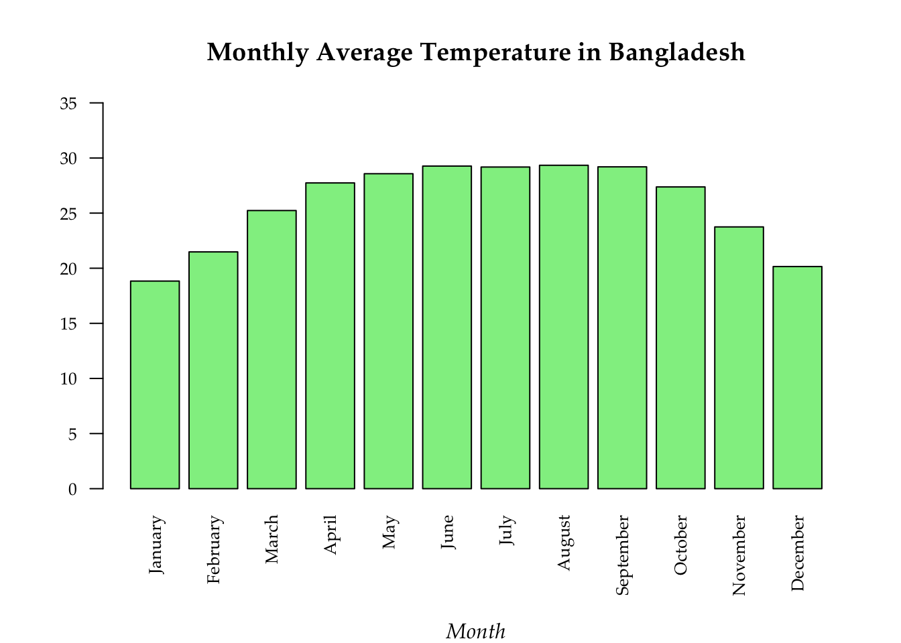
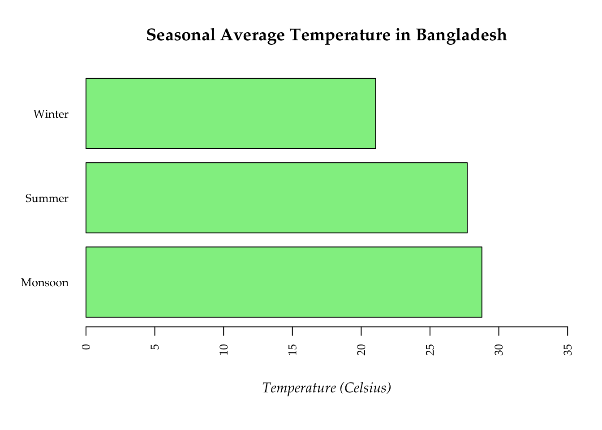

## Importing My datalibrary(readr)data <-read_csv("Master_Database.csv")
New names:
Rows: 15960 Columns: 17
── Column specification
──────────────────────────────────────────────────────── Delimiter: "," chr
(6): Station, Division, Time, Region, Month, Season dbl (11): ...1, Lat
(degree/min), Lon (degree/min), Y, X, Max, Min, Avg, Yea...
ℹ Use `spec()` to retrieve the full column specification for this data. ℹ
Specify the column types or set `show_col_types = FALSE` to quiet this message.
• `` -> `...1`
## sorting datacorrect_month_order <-c("January", "February", "March", "April", "May", "June", "July", "August", "September", "October", "November", "December")# Convert 'Month' to a factor with levels in the correct chronological orderdata$Month <-factor(data$Month, levels = correct_month_order, ordered =TRUE)# Sort the data frame by the 'Month' column (which is now an ordered factor)data_sorted <- data[order(data$Month), ]# Display the sorted data#print(data_sorted)
a. Histogram
# Setting parameterpar(mar =c(4,4,3,3), family ="Palatino", cex =1.2, font.main =2, font.lab =3)## Histogramhist(data$Avg, main ="Histogram of Average Temperature in Bangladesh",xlab ="Average Temperature (Celsius)",col ="palegreen2",prob =TRUE,xaxt ="n", xlim =c(10,35))lines(density(na.omit(data$Avg), bw =1.5), col ="black", lwd =3) axis(1, at =seq(10, 35, by =5 ), labels =seq(10, 35, by =5), las =1)

b. Barplot
i. Vertical
# Barplot par(mar =c(6, 4, 4, 2), mgp =c(5, 1, 0), family ="Palatino", cex.main =1.2, cex.lab =1, cex.axis =0.8, font.main =2, font.lab =3, las =2)monthlyavg <-aggregate(Avg ~ Month, data = data, mean)barplot(monthlyavg$Avg, names.arg =sort(monthlyavg$Month),col ="palegreen2", border ="black",xlab ="Month", ylab ="Temperature (Celsius)", ylim =c(0, 35),main ="Monthly Average Temperature in Bangladesh")

ii. Horizontal
par(mar =c(6, 5, 4, 2), mgp =c(3, 1, 0), family ="Palatino", cex.main =1.2, cex.lab =1, cex.axis =0.8, font.main =2, font.lab =3, las =2)seansonalavg <-aggregate(Avg ~ Season, data = data, mean)barplot(seansonalavg$Avg, names.arg = seansonalavg$Season,horiz =TRUE, col ="palegreen2", border ="black",xlab ="Temperature (Celsius)", xlim =c(0, 35),main ="Seasonal Average Temperature in Bangladesh")

c. Pie Chart
par(mar =c(4, 4, 4, 4), mgp =c(3, 1, 0), family ="Palatino", cex.main =1.2, cex.lab =1, cex.axis =0.8, font.main =2, font.lab =3, las =2)data$Rain <-as.numeric(data$Rain) # Group by division and calculate the total rainfall per divisionrain_by_region <-aggregate(Rain ~ Region, data = data, sum, na.rm =TRUE)green_ramp <-colorRampPalette(c("darkseagreen1", "greenyellow", "seagreen1", "palegreen2","limegreen"))# Add percentage to the pie chartpie(rain_by_region$Rain, labels =paste(rain_by_region$Region, round(100* rain_by_region$Rain /sum(rain_by_region$Rain), 1), "%"),main ="Total Rainfall by Region",col =green_ramp(length(rain_by_region$Rain)),radius =1,clockwise =TRUE)
par(mar =c(5, 5, 6,2), family ="Palatino", cex.main =1.2, cex.lab =1, cex.axis =0.8, font.main =2, font.lab =3, las =1)temp <-aggregate(Avg ~ Year + Month, data = data, mean)rain <-aggregate(Rain ~ Year + Month, data = data, sum)plot(rain$Rain~temp$Avg, pch =21, bg ='palegreen2', col ='forestgreen',main ="Relationship between Average Temperature\n and Total Rainfall by Year and Month",xlab ="Average Temperature (Celsius)",ylab ="Total Rainfall (mm)")